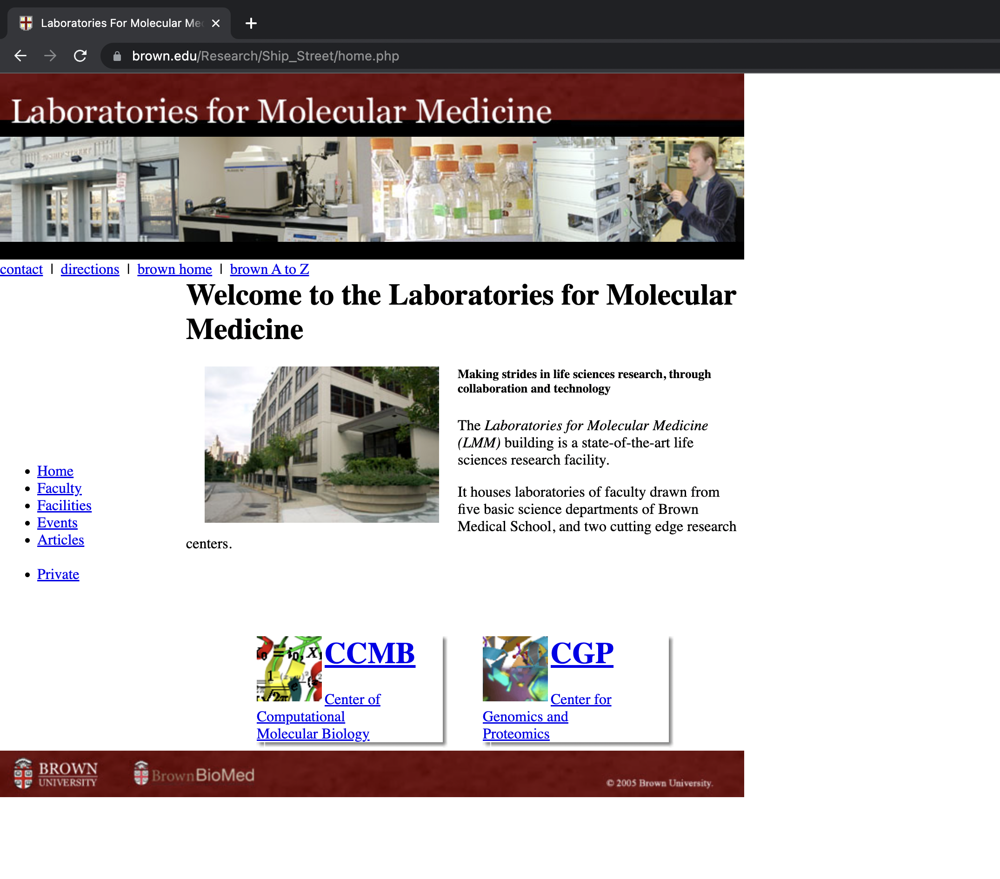
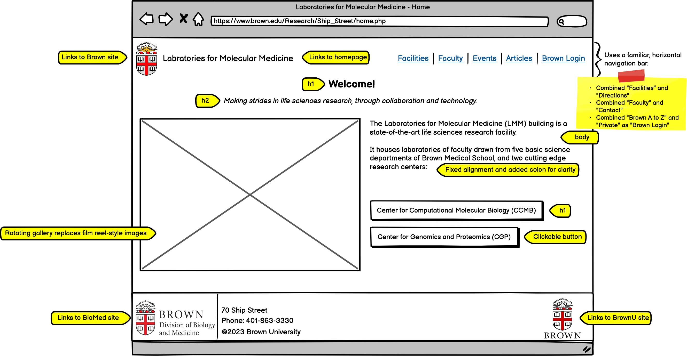
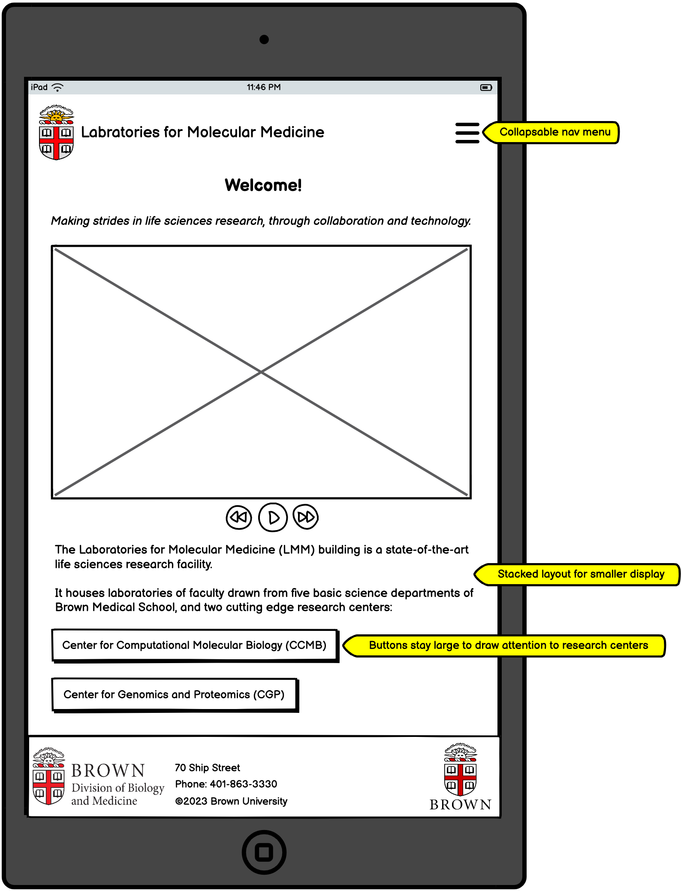
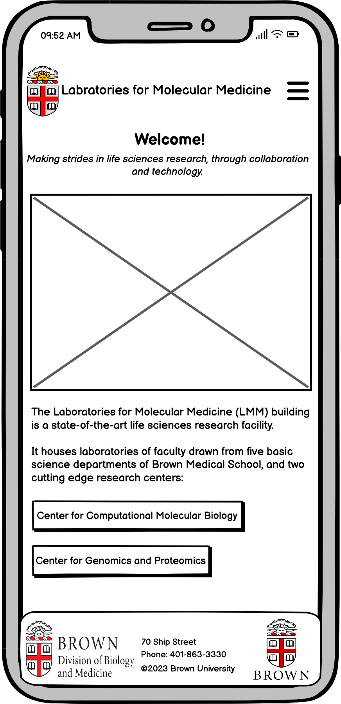
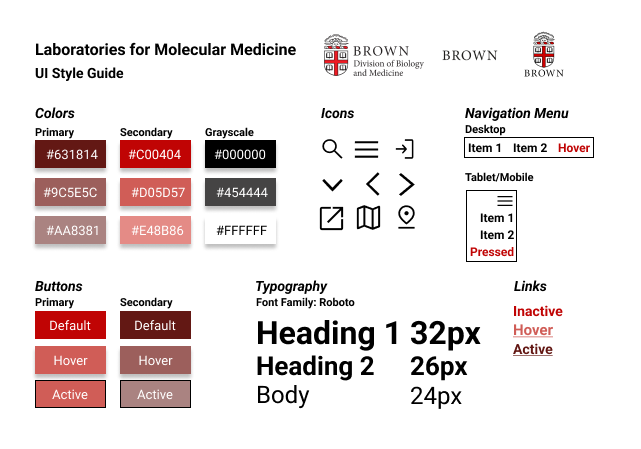
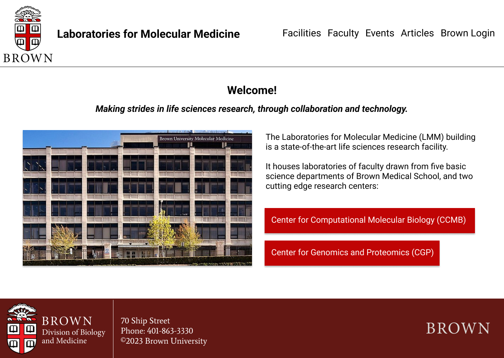
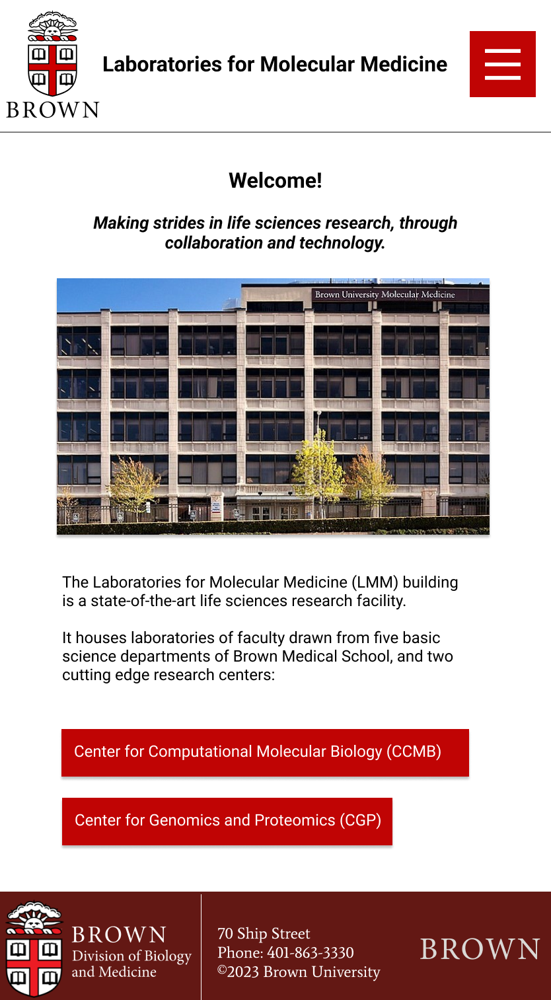
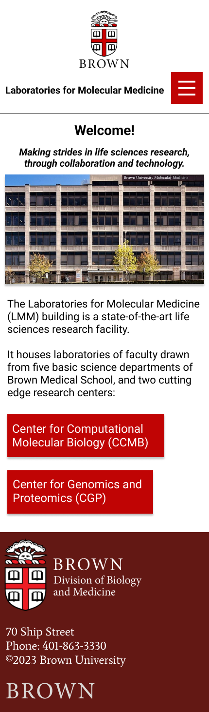

While searching for labs to conduct research with at Brown, I noticed
the page for the Labratories for Molecular Medicine is unresponsive,
confusing to use, and ultimately misrepresentative of the
caliber of Brown's facilities. Through this project, I redesign the
home page to make it more usable and responsive to different screen
sizes.
Original Website
The Labratories
for Molecular Medicine
site informs users of Brown's lab and the 2 research centers within it
(the CCMB and the CGP).
Here is a screenshot of the homepage:

Identifying Usability Problems
To improve the site, I first analyzed the original homepage's usabillity through the lens of
efficiency, learnability, and memorability.
Usability Problems
The site is completely unresponsive. Its fixed size is too small/big for most screens.
The pattern affordance of a main navigation bar is not used.
The site splits main navigation items into 2 groupings (at the top and left side) for no apparent reason.
The navigation items lack consistency in capitalization and format (bullets
v.s. items separated by "|")
The navigation items are unclearly labeled.
There is no indication of whether links are external or internal.
New users will be confused by links to both "brown home" and "Home."
The "private" label makes it unclear which groups of users can access this
section.
The "brown A to Z" link is broken.
The links to CCMB and CGP are in containers that look like buttons, but do
not act as buttons. This is a misleading affordance.
The user must click on an underlined portion to be directed to the center's page.
There is no indication these links are external.
The CCMB and CGP links far away and misaligned with the proceeding paragraph,
making it unclear they are the centers described in it.
Despite its higher heirarchy than the text below it, the
bold subheading "making strides in life sciences..."
is smaller than the body.
The film reel-styled image on the top of the homepage is only dynamic
after it is clicked on.
Once a user clicks on the image, the remainder of the page dissapears.
The user cannot return to the homepage without pressing the browser's back button.
The word "centers" wraps so far to the left that it is disembodied
from the paragraph.
Accessibility Problems
WAVE's assessment of the site was accurate in determining:
Every image lacks alt text.
The page has 0 ARIA elements.
The site's language is not specified as English.
There are errors in the heading structure. It jumps from h1 to h5.
However, while WAVE recognized the menu items are an unordered list, it did not
recognize they are missing nav element labels. The lack of nav labels
makes it hard for assitive technologies to identify the main navigation.
Visual Redesign
Addressing the usability and accesibility problems, I created low-fidelity
wireframes, a visual design style guide, and high fidelity prototypes
for 3 screen sizes (mobile, tablet, desktop).
Low-Fidelity Wireframe



Visual Design Style Guide

High-Fidelity Prototype



Redesigned Website
After planning my design, I coded up the website using HTML and CSS.
Here it is!
Conclusion
As it was my first time creating a responsive webpage from scratch, I learned a lot through this project.
After having redesigned a page from start to finish, I am more confident in my web design and development abilities
and look forward to sharpening these skills going forward.